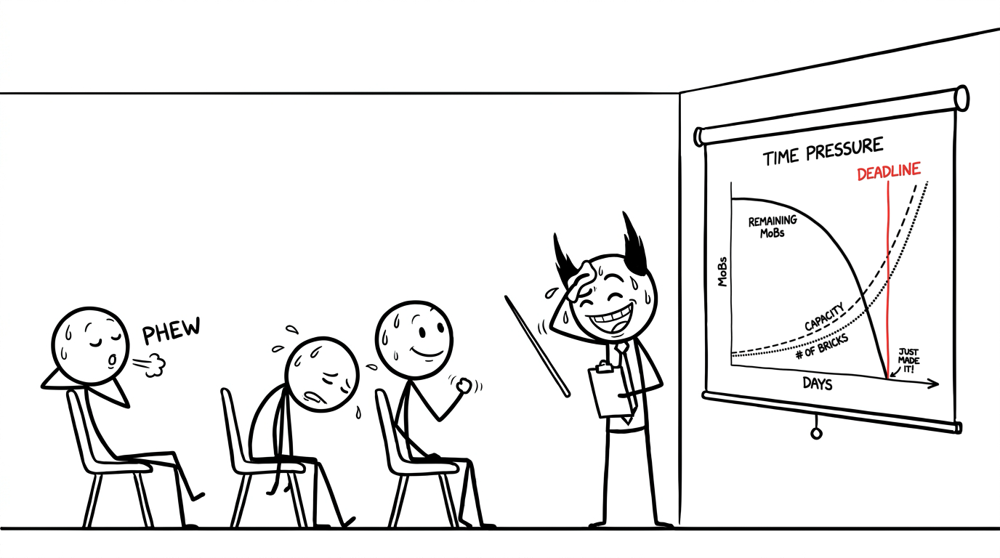

<section id="time-pressure" data-transition="fade" style="display:flex; align-items:center; justify-content:center; padding:0; background:#fcfcfa">

<p style="position:absolute;left:0;bottom:10px;width:1920px;margin:0;text-align:center;font-family:'Patrick Hand', 'Trebuchet MS', sans-serif;font-size:22px;color:#8a8f98">Copyright Dobromir Montauk 2026</p>
<aside><b>Capacity beats the deadline.</b> Same deadline, same pile. What changed is capacity: better tools, more people, more bricks per trip, and it compounds. That’s how you beat a deadline you can’t beat at today’s pace. But “just made it” isn’t comfortable: one more surprise and we’re back on the scary slide.</aside>
</section>
